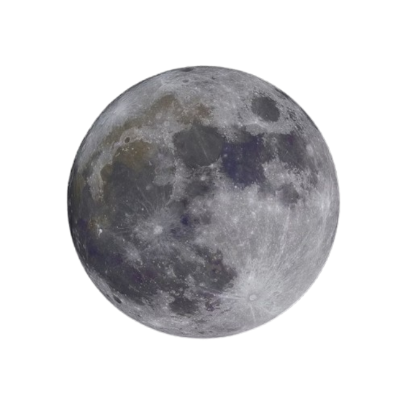

Planet Mercury

Mercury is the smallest planet in our solar system and the closest one to the Sun. Because it lacks a substantial atmosphere to trap heat, it experiences extreme temperature swings, ranging from scorching hot during the day to freezing cold at night. Its surface is rocky and covered with thousands of craters, making it look very similar to our Moon. Despite its proximity to the Sun, Mercury is actually the second hottest planet after Venus, and it speeds around the Sun faster than any other planet, completing a full orbit in just 88 Earth days.